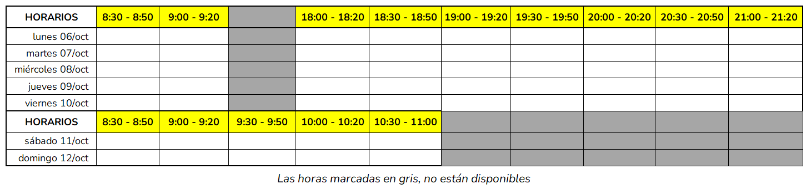

Coloco acá los horarios de las videoconferencias para que cada grupo indique cuándo puede realizarla

Recordar recargar la pantalla para ver las horas reservadas por vuestros compañeros
Tal y como se especifica en el enunciado de la fase 2, un miembro del grupo (no el consultor) será el encargado de organizarla, invitando al consultor y al resto de miembros del grupo en la fecha y hora estipulada.
Asimismo, en la videoconferencia, cada grupo podrá exponer sus dudas sobre el proyecto.
A continuación, indico la forma correcta de organizar la videoconferencia, de tal forma que me quede guardada en mi calendario y no haya malos entendidos.